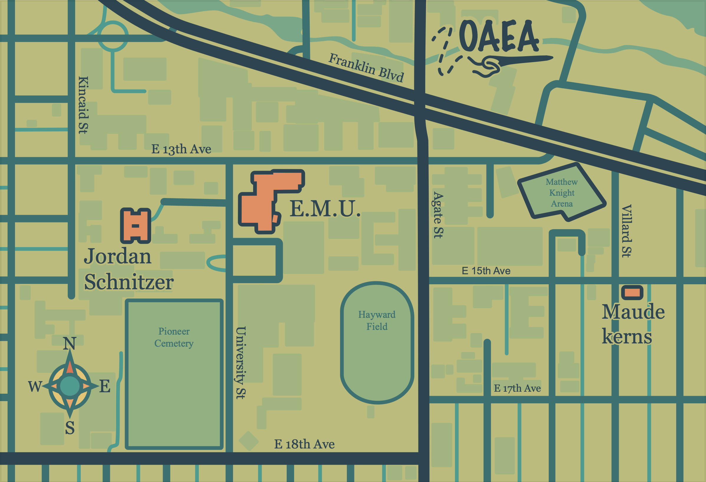

This was a project we got in graphic design 3 where we were assigned to make a map of the University of Oregon where we simplified some element while making others stand out. My general process was to use an existing map as my base and filter down to the important roads. Overall this taught me about composition and using a limited color scheme.
